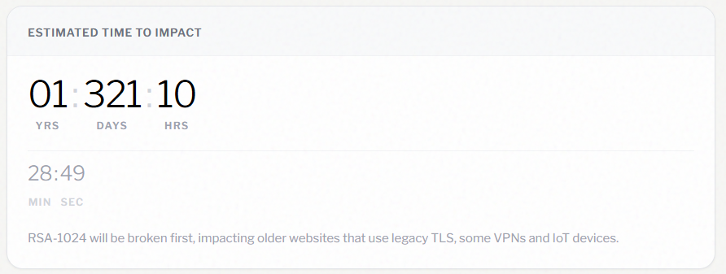
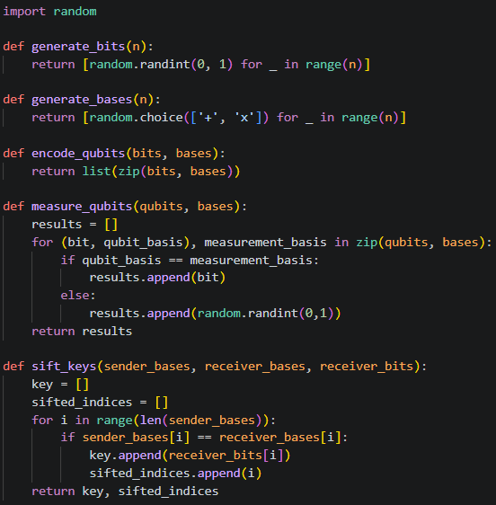
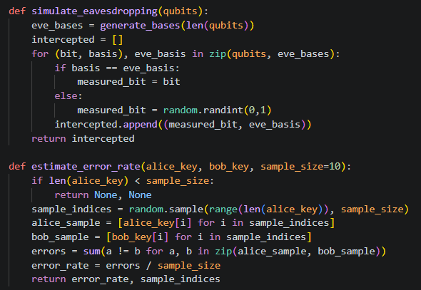
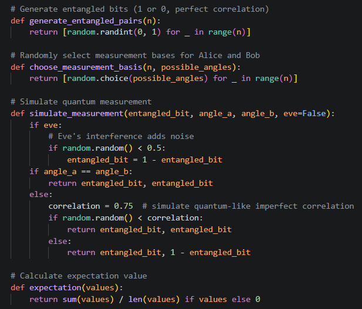
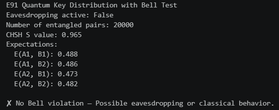

Q-Day is Coming!

Q-day sounds like an abstract concept straight out of a comic book, but in the realm of cryptography, this is a very real event that will take place in the next few years. I first heard of this term in the cryptography class discussed in the previous AIC article, but it was brought up again while I was at a recent security conference. A panel of senior product managers and security researchers discussed a date in the near future where quantum computers would become powerful enough to break modern encryption algorithms like RSA and stressed the need for security engineers to prepare their organizations for this inevitability. If you'd like to track the countdown to Q-day yourself, check out isitqday.com which also tracks significant events along the way.
The accelerating rate of innovation in computation has created a need for post-quantum encryption, or PQE, which would remain secure well after Q-day hits. These encryption schemes can be implemented using today's technology and are trusted to remain secure even if an attacker has a large quantum computer. As an avid researcher, I decided to take this a step further and also discuss quantum encryption (QE) schemes, which prove security in encryption using technology that may not necessarily exist yet. In this edition of Adventures in Cryptography, we will discuss and demonstrate both PQE and QE schemes, providing examples of both using the limitations of today's technology.
Experiments in PQE
In this section, we will discuss two post-quantum encryption schemes that will remain cryptographically secure against attackers that possess significantly strong quantum computers (quantum attackers).
Classic McEliece
In 1978, Robert McEliece introduced an error-correcting code cryptosystem using a random binary Goppa code as the public key. Random errors are introduced into the ciphertext, and the private key efficiently extracts that codeword, identifying and removing errors along the way. This system was designed to be a one-way encryption scheme which has remained quite stable over the past 50 years. Thanks to its scalability and conversion of the McEliece system into a Key Encryption Mechanism (KEM), it has similar tightness for attacks from quantum computers. Classic McEliece brings the McEliece cryptosystem as well as the KEM tightness conversion all under one umbrella, creating a very scalable and very reliable mechanism at the highest security levels, even against quantum computers.
I tried to produce a Python script as close as possible to the actual implementation of Classic McEliece. This quickly became a problem due to the binary Goppa codes and special arithmeric, so I simplified it for the sake of this exercise. This interpretation of Classic McEliece relies on linear algebra over the finite binary field \(\mathbb{GF}(2) \), where all operations are performed modulo 2. This simplifies addition and subtraction, which become identical to bitwise XOR, and it also simplifies multiplication and division, which become identical to bitwise AND. In the key generation step, we take our secret text (matrix \(G \)) and disguise it as a completely random ciphertext (matrix \(G' \)). We achieve this through Gaussian Elimination, transforming the raw generator matrix \(G_{raw} \) into systematic form using row reductions to make decryption efficient and optimal. The resulting matrix becomes \(G_{sys} = [I_{k} | Q] \), where \(I_{k} \) is a \(k \times k \) identity matrix and \(Q \) is a \(k \times (n-k) \) parity-check matrix used for configuration. To hide the algebraic structure of \(G_{sys} \), we use two secret matrices:
- The Scrambling Matrix \(S \), a random invertible \(k \times k \) matrix that mixes the rows,
- And the Permutation Matrix \(P \), an \(n \times n \) matrix containing exactly one \(1 \) in each row and column, which is used to shuffle the colum positions.
The public key is then computed as \(G' = (S \cdot G_{sys} \cdot P) % 2 \). We then encrypt a message vector \(m \) of length \(k \) by taking the linear combination of the public key's rows and injecting a controlled error vector \(e \) of weight \(t \):
\[c = (m \cdot G' + e) \text{ mod } 2 = (m \cdot S \cdot G_{sys} \cdot P + e) \text{ mod } 2 \]
Next we decrypt the encrypted ciphertext from the outside in. First, we undo the effect of shuffling the columns by the permutation matrix \(P \) by multiplying the ciphertext vector \(c \) against the transpose of the permutation matrix, \(P^{T} \). This works because from linear algebra we know that for any orthogonal permutation matrix, its transpose is its exact inverse: \(P \cdot P^{T} = I_{n} \). Thus the first step of decryption can be expressed as:
\[\hat{c} = c \cdot P^{T} = (m \cdot S \cdot G_{sys} \cdot P \cdot P^{T}) + (e \cdot P^{T}) \text{ mod } 2 = (m \cdot S \cdot G_{sys}) + \hat{e} \text{ mod } 2 \]
In a complete McEliece cryptosystem, \(\hat{c} \) is passed into a Goppa decoder. While crafting the ciphertext, we incorporated an error vector \(e \) inside; as part of the first phase of decryption, we extracted the error vector \(\hat{e} \) and can now subtract this from \(\hat{c} \) to remove the error bits from the decryption: \(c_{clean} = \hat{c} - \hat{e} = m \cdot S \cdot G_{sys} \text{ mod } 2 \). Additionally, because \(G_{sys} \) is systematic, we can multiply any vector \(x \) by \(G_{sys} \) to isolate \(Q \):
\[ x \cdot G_{sys} = x \cdot [I_{k} | Q] = [x \cdot I_{k}|x \cdot Q] = [x|xQ] \]
Something interesting happens if we let \(x = m \cdot S \). This is simply the scrambled message, which yields \(c_{clean} = [(m \cdot S)|(m \cdot S \cdot Q)] \). By taking the first \(k \) bits of \(c_{clean} \), we extract the product perfectly without needing to divulge into more matrix math: \(m' = m \cdot S \). finally, we multiply the intermediate message \(m' \) by the inverse of the scrambling matrix \(S^{-1} \) to recover the plaintext:
\[m = m' \cdot S^{-1} = (m \cdot S \cdot S^{-1}) \text{ mod } 2 = m \]
SPHINCS+
SPHINCS+ is an advancement of the original SPHINCS signature scheme presented at EUROCRYPT 2015, particularly with regard to reducing signature size. As a stateless hash-based signature scheme, it has been selected by NIST for standardization and is designed to be secure well after the advent of quantum computers. It relies entriely on the security of cryptographic hash functions instead of mathematical problems like lattices, which we explored earlier with Classic McEliece. While this makes SPHINCS+ very reliable and resistant to attacks, it introduces a tradeoff where it is slower than lattice-based counterparts and produces larger signatures.
Unlike classical cryptography which relies on hard mathematical problems, SPHINCS+ relies on the security of cryptographic hash functions. If a hash function like SHA256 cannot be inverted, it follows that SPHINCS+ cannot be broken, which makes it immune to sophisticated attacks, primarily those from quantum computers. The base layer of SPHINCS+ is a Winternitz One-Time Signature (WOTS+), used here to safely sign a single message. To create a key, we generate a secret random value \(x \). We hash it repeatedly \(w-1 \) times, where \(w \) is the Winternitz parameter, usually \(w = 16\). We get our signature by converting the message to a number \(m \) and hashing the secret key \(m \) times. We verify the signature by hashing it the remaining number of times needed to reach \(w \), that is, \((w-1)-m \) times, and if the final result matches the public key, the signature is valid.
Because WOTS+ is a one-time signature, SPHINCS+ scales up using Forest of Random Subtrees (FORS). FORS uses a set of \(k \) independent Merkle trees, each containing \(t=2^{d} \) leaves. The message hash is split into \(k \) string segments, where each segment acts as an index to pick one leaf from each tree. Even if an attacker were to intercept multiple signatures, they would only learn a few random leaves. Because the attacker does not know the entire index structure, they cannot forge a signature because they do not know every secret leaf. SPHINCS+ expands even further and stacks these components into a Hypertree, a massive hierarchy of Merkle trees that allows users to sign up to \(2^{64} \) messages without keeping track of which keys they have already used. To summarize:
- The incoming message is hashed and transformed into a seed used to pseudorandomly select a specific FORS key at the very bottom of the hypertree.
- The public key of that FORS instance is signed by a WOTS+ key, which is a leaf inside a small Merkle tree.
- The root of that small Merkle tree is then signed by another WOTS+ key in the tree above it.
- This chain continues upward for \(d \) layers untill it reaches the top-level Merkle tree, also known as the user's Master Public Key.
- If the hypertree has a height of \(h \) layers and \(d \) individual levels, a single tree of height \(h/d \) requires computing \(2^{h/d} \) hashes to build.
This approach introduces some tradeoffs:
- By keeping \(d \) high, we introduce more layers to the hypertree, allowing signatures to be calculated very quickly. However, the signature becomes large because it must include paths for every layer. This is the Fast variant.
- Alternatively, we can keep \(d \) low, introducing fewer layers to the hypertree. Each individual tree becomes very tall, reducing the number of paths needed for the signature and reducing its size. However, the tall trees require exponentially more hash calculations, making it slow. This is the Small variant.
Fortunately, there is an official Python implementation in the pyspx package. It can be installed via pip and its usage is quite simple compared to what we saw earlier. SPHINCS+ requires certain parameters in order to operate:
- The desired hash function, either SHAKE256, SHA256, or Haraka,
- The Security level, either 128, 192, or 156 bits,
- And the Optimization strategy.
ffor fast variants, orsfor small variants.
With this library, writing the sample script becomes trivial. After importing your desired package, parameters and all, we can quickly generate_keypair and sign the message using the secret key. SPHINCS+ signatures are very large, usually multiple kilobytes in size. We can also verify the signature against valid and invalid combinations (for example, altering the data and using the same signature to evaluate message tampering.)
Experiments in QE
In this section, we will discuss two quantum encryption schemes using technologies that are not yet easily reproducible using traditional computing technology. While QE schemes utilize quantum computing, they are not necessarily secure against attackers with quantum computers; for the sake of discussion, the schemes we will discuss are safe against quantum attackers.
BB84 Protocol
In 1984, Charles Bennett and Gilles Brassard invented the BB84 protocol, which uses quantum bits (qubits) in different polarization states to securely distribute a cryptographic key between two parties. This is the most widely implemented and tested quantum cryptographic protocol, laying the foundation for modern quantum communication networks and secure data exchange.
The basis of the BB84 protocol involves two users, Alice and Bob, sharing a secret key using physics. Alice makes random bits and encodes them into photon polarization states, using two different bases, rectilinear ("+") or diagonal ("x"). Bob picks a random base to measure each incoming photon (polarized bit) without knowing Alice's choice ahead of time. Over a public channel, Alice and Bob complete sifting, where they share which bases they used for each photon and throw out the ones where there bases did not match.
This sounds wonderful, but what happens if Eve attempts to intercept a message? This becomes impossible to accomplish (and get away with it) thanks to two foundational elements of quantum physics. By the nature of subatomic particles, their position and momentum are linked such that you cannot measure both accurately. Knowing position better makes momentum less certain, and knowing momentum better makes position less certain. This limit doesn't come from poor instrumentation, but rather a fundamental property of the universe; physicists know this as the Heisenberg Uncertainty Principle. This applies to BB84 because photons are subatomic particles, and if an eavesdropper attempts to measure the polarity of a photon they will change the quantum state and immediately reveal themselves. Alice and Bob can check for this by taking a sample of bits received and evaluating how many particles match; if the error rate is too high, then there is likely an intruder attempting to intercept the message.
Theoretically, BB84 is unbreakable under ideal conditions, but we all know that the real world is far from ideal. This is in part enforced by the No-Cloning Theorem, another foundation of quantum physics that prevents the perfect cloning of quantum states. This would prevent an attacker from simply copying the message over the wire and cracking it offline. A more practical example would be through the physical detector used at Bob's receiver, where Eve shines a bright light to force his photon detectors into manipulating outcomes. This touches on generating secure encryption keys using Bell inequality and nonlocal correlations, which we will touch on a little bit in our next section.

Initial functions to generate random bits and bases, encode hypothetical qubits, and sift keys for the BB84 protocol.

Additional functions to simulate eavesdropping and error checking.
E91 Protocol
The E91 protocol is a little more complicated, using quantum entanglement and Bell's inequality to securely distribute a key. In this scheme, Alice and Bob share entangled photon pairs. They independently choose random measurement bases, and the outcomes are correlated if measurements are in aligned bases. They set aside a subset of results to test Bell's inequality (more on that later), and use the rest to form the secret key. While we can't simulate actual quantum entanglement in Python, we can emulate the steps and logic of the protocol with some assumptions.
Like last time, I wanted to add some noise to the function to simulate an eavesdropper listening in on the conversation. Enter Bell's theorem, based upon the experiments of John Stewart Bell in 1964, demonstrating that physically separate particles that undergo quantum entanglement violate the principle of locality, which states that particles can only be influences by their immediate surroundings and that interactions mediated by physical fields cannot propagate faster than the speed of light. Bell used this assumption to create a mathematical constraint related to this principle, which eventually became known as the Bell inequality. This was later refined into the Clauser-Horne-Shimony-Holt (CHSH) inequality, \(S \), which breaks everything down into one simple test:
\[|S| \leq 2 \]
\[S = E(a,b) - E(a,b') + E(a',b) + E(a',b') \]
We use \(S \) with a subset of the measured photons from the E91 protocol to determine if there is an eavesdropper on our quantum channel. If \(S \) is less than 2, then Alice and Bob are likely communicating using a secure quantum channel. If \(S \) is greater than or equal to 2, then one of two things may be happening: either there may be an eavesdropper on the channel, or we are seeing classical correlations where we do not expect to see them, a limitation of the hardware available for use today.
I attempted to test this in the E91 python script, but regardless of whether Eve was tampering with the photons or not, I always had \(S \) well below the classical limit of 2. Even when using larger sets of photons and forcing even CHSH distribution (limiting Alice and Bob to a subset of angle pairs altogether), this limit exists as a result of us not having the necessary hardware to complete this calculation. Achieving \(|S| > 2 \) is a uniquely quantum effect that arises from superposition and entanglement, ultimately lacking the behavior that gives rise to Bell inequality violation.

Initial functions to generate entangled pairs, choose measurement bases, and simulate measurement.

Results from a run with \(n = 20,000 \) photons, highlighting how quantum computation is not possible using classical Python.
What's Next?
In the next entry of the Adventures in Cryptography series, we will take a more practical approach into embedded cryptography and how we can utilize limited onboard memory to safely store secrets. You can think of this as a blend between the AiC series and the Secure Boot article from last year. I'm looking forward to digging into this very interesting topic!
Sources
OpenAI: header image
isitqday.com: Live countdown to Q-day event, including the time leading up to the cracking of RSA-1024 scheme by quantum computers.
mceliece.com: Reference work for Classic McEliece
sphincs.org: Reference work for SPHINCS+
J. S. Bell: Reference work for Bell theorem, Bell inequality
Published August 2026